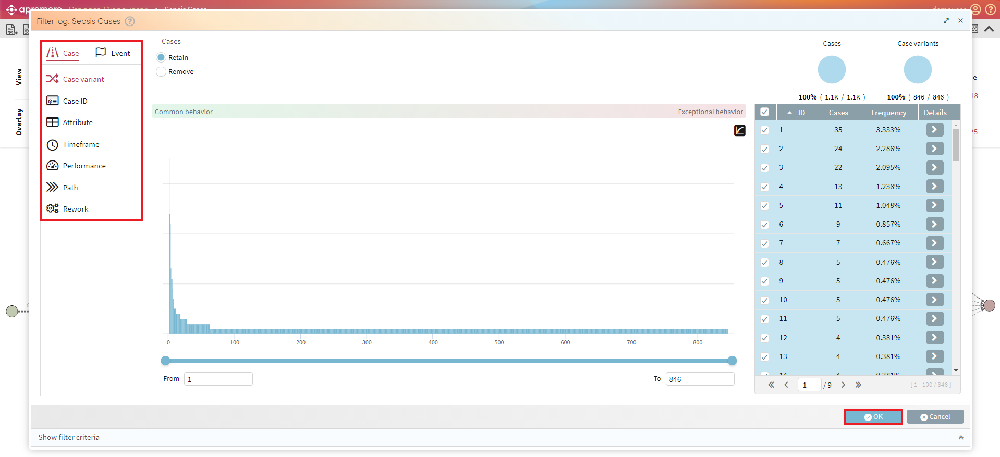
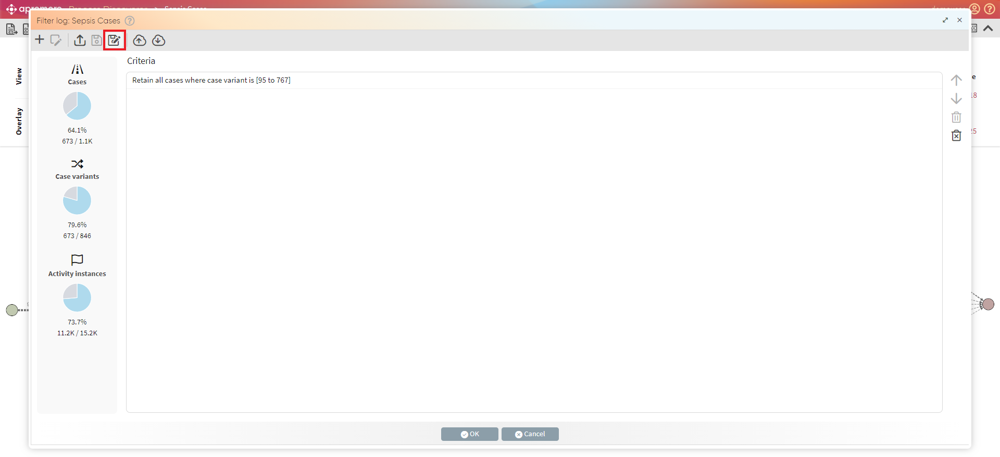
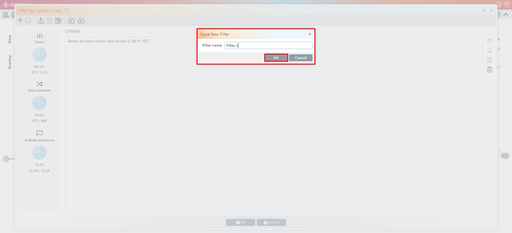
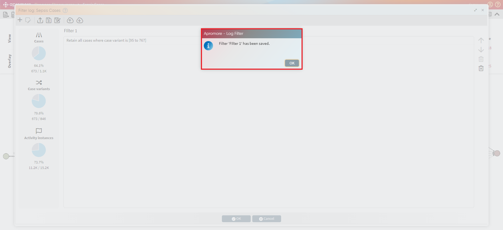
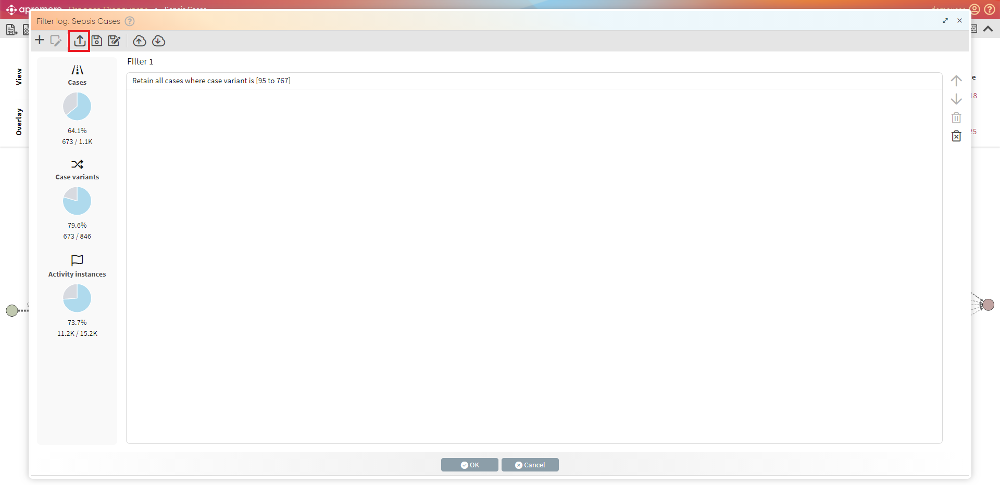
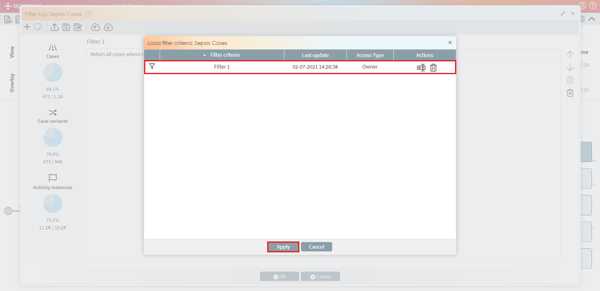
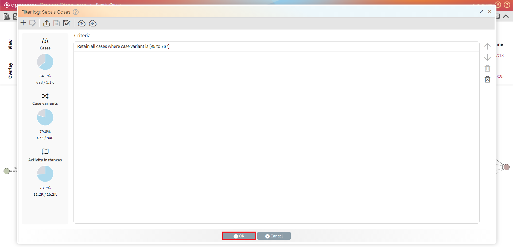
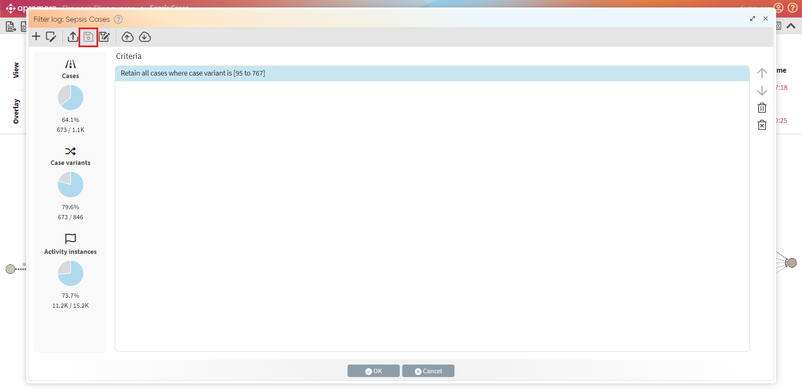
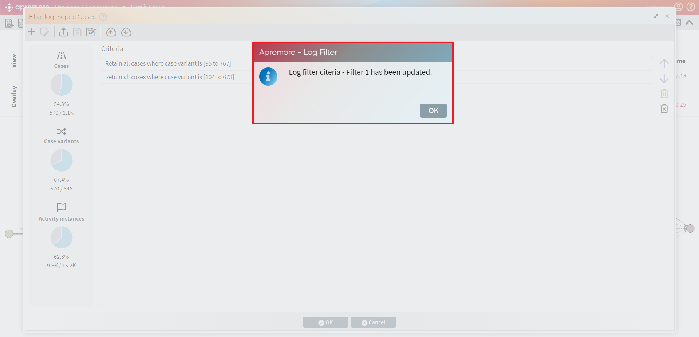

Save filter
Apromore provides the functionality of saving and sharing filters. To save a filter we first need to create a new filter and then save the filter.

Save as
Once a filter is created, click Save as in order to save the new filter.

The Save filter criteria dialog will appear. Give a name to the filter and click OK.

Once the filter is saved, we can see a confirmation message.

Load
To load filters associated to a log, click on Open button.

We select a filter that we wish to load and click Apply.

Once the filter is loaded, click on OK to filter the event log.

Save
We can update an existing filter and save it. For example, we add an additional filter criterion to an existing filter and click on Save.

We can see a confirmation message that the filter for the associated log is updated.
